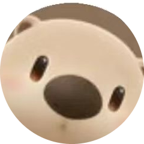

计算机科学与技术 | 游戏开发 | 技术美术
"我站在这里就是一切的开始。"
具备美术资产到引擎落地的全流程能力，熟悉Unity/UE5双引擎，多次Game Jam高强度协作经验。同时掌握前端3D展示、移动端混合开发、桌面端跨平台开发与网络通信技术，项目覆盖游戏开发多个横向领域。
具备极强创新整合能力，善于将不同技术栈的课程项目与个人作品有机融合，形成可落地、可展示的完整系统。热爱创造沉浸式数字体验，追求技术与艺术的完美结合。

技术美术 / 内容创作者 · 抖音号 57692551253
科普短视频 WebGL / Three.js 逐帧渲染 Python ffmpeg基于 Unreal Engine 5 与 Gameplay Ability System 构建的盛唐题材动作冒险游戏，覆盖能力、属性、效果、标签、角色交互及内容展示。
查看游戏工程Android端采用原生+WebView混合架构，通过JSBridge承载Three.js 3D校园模型，实现移动端3D可视化展示。
查看 GitHub.NET后端基于Furion提供JWT认证、论坛CRUD及WebSocket实时聊天，集成讯飞星火大模型实现AI校园助手。Avalonia桌面端实现跨平台桌面应用，支持MVVM架构与动态主题切换。
查看 GitHub本科毕业设计：基于 D3D12 的延迟渲染管线与参数化写实风格切换系统。将光源、材质、后处理抽象为可热加载的 JSON 预设，接入 Streamline + DLSS 5 超分/帧生成链路，支持 AB 分屏对比验证。
查看 GitHub负责展览馆场景模型搭建与美术制作，打造沉浸式虚拟展览体验。
2025年和2026年GGJ，使用Unity引擎，担任地编、特效、技术美术、建模美术等多个角色。
2025年China Game Jam，在48小时内完成创意游戏开发，锻炼快速开发和团队协作能力。
参与线下技术交流活动，分享Vibe Coding理念与实践经验，与行业开发者深入交流。
如果您对我的作品感兴趣，或者有任何合作机会，欢迎随时联系我。
返回3D展示 学习笔记 作品详情